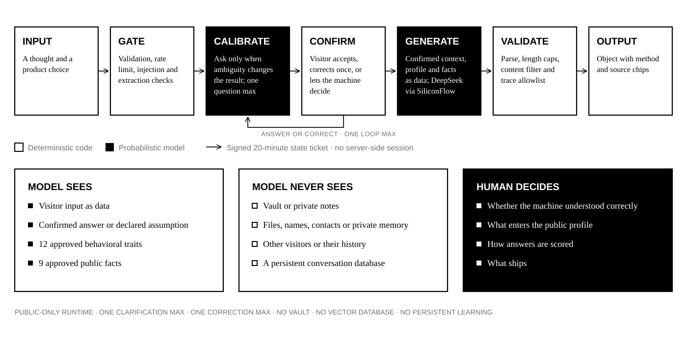

The machine now pauses before generation to clarify consequential ambiguity and let the visitor confirm its interpretation. The loop is deliberately bounded: at most one clarification and one correction, carried by a signed short-lived ticket rather than a stored conversation.

status reports readiness, turn runs calibration and confirmed generation, and dispense remains as the compatible direct-generation route. The local server mirrors all three.
Initial input, clarification answers, and corrections are screened before another model call. Final output is parsed, length-capped, content-filtered, and checked against the trace allowlist.
The server signs the current interpretation into a 20-minute ticket. It does not create a conversation database, and the ticket contains no private profile data.
The generator has no vault reader, vector index, private memory, owner profile store, or persistent learning path.